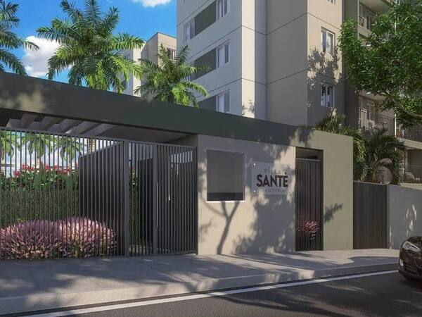
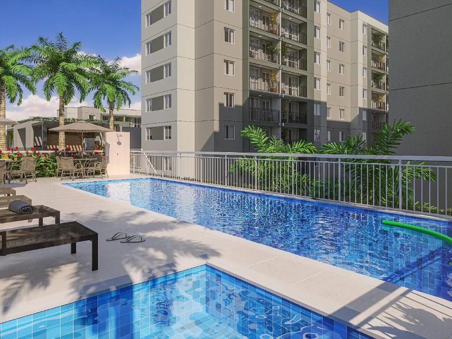
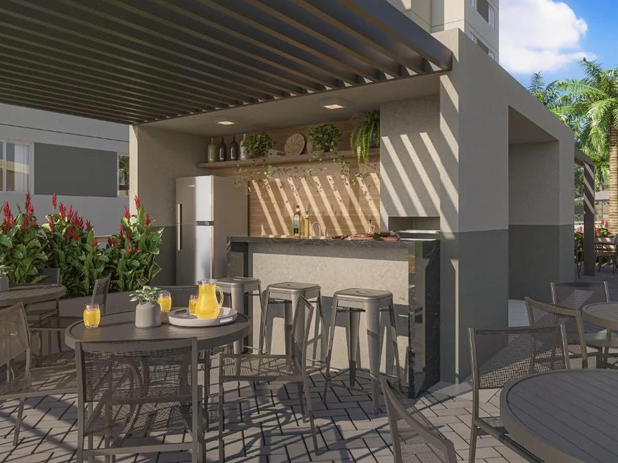

Galeria

Fachada, lazer e área gourmet



1 e 2 quartos com suíte e varanda, lazer completo e localização estratégica entre Taquara, Barra da Tijuca e a Linha Amarela.
*Disponibilidade de unidades sujeita a alteração conforme velocidade de vendas. Confirme sempre com a corretora.
Portaria, segurança e comércios no local.
Áreas de lazer pensadas para toda a família, com varanda em todas as unidades.
Próximo à Estrada do Tindiba, com acesso à Taquara, Barra da Tijuca e Linha Amarela.
Entrega mais próxima do que os lançamentos — para quem não quer esperar anos.



*Plantas, metragens e valores meramente informativos. Confirme disponibilidade e condições atualizadas com a corretora.
Colégio Cruzeiro, Escola Tamandaré e Sesi/Senai.
Center Shopping, BR Stores Mix Mall & Business, Park Shopping Jacarepaguá.
Castelo do Vinho, Planalto do Chopp, Restaurante Gigante Nordestino.
Acesso rápido à Estrada do Tindiba, Taquara, Barra da Tijuca e Linha Amarela.
O Villa Santé está em obras avançadas — a disponibilidade muda rápido. Te mostro as unidades e plantas disponíveis agora mesmo.
Ver unidades disponíveisNa Rua Samuel das Neves, 495, no Pechincha, Jacarepaguá, Zona Oeste do Rio de Janeiro.
O empreendimento está em obras avançadas, com últimas unidades disponíveis. A Crisla confirma o status atualizado da obra e a data prevista de entrega.
Apartamentos de 1 e 2 quartos com suíte e varanda, com plantas de até 65 m².